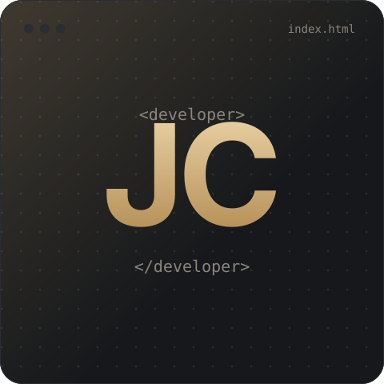
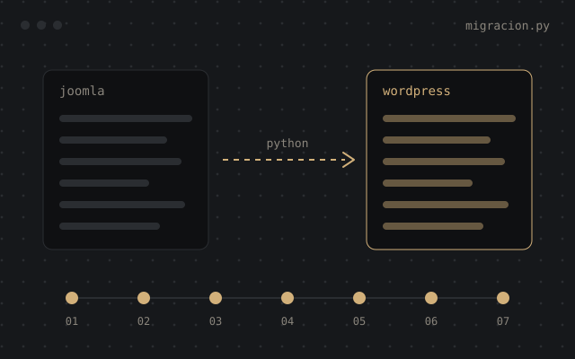
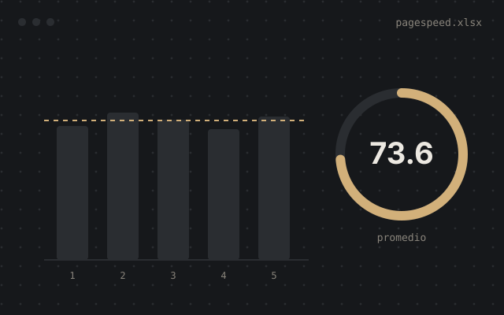
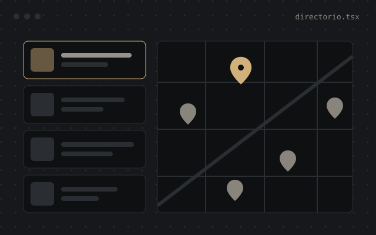
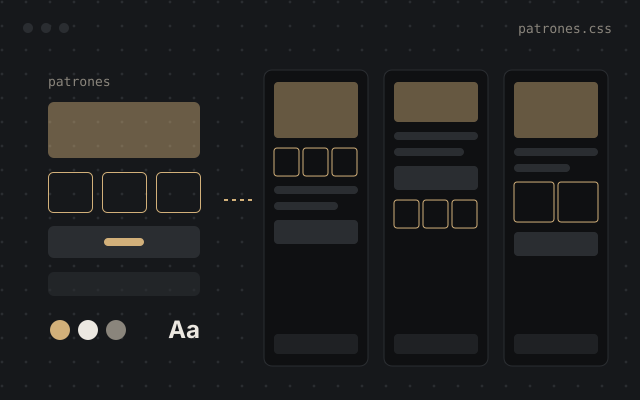
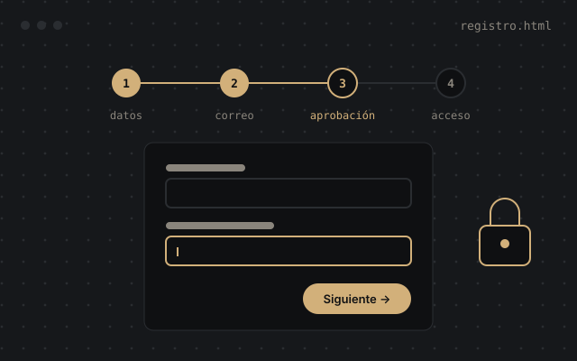
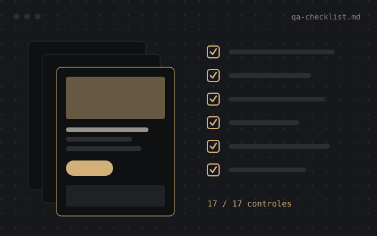

WordPress a medida
GeneratePress, GenerateBlocks, ACF y PHP personalizado: shortcodes, consultas y plugins pequeños. Primero los estilos globales y los patrones reutilizables, después las páginas.
Desarrollador web · 17+ años
Mi nombre es Javier Cueva. Construyo sitios a medida en WordPress y Webflow, mejoro su rendimiento, SEO técnico y escribo automatizaciones en Python para migrarlos y probarlos.

Llevo más de 17 años construyendo y manteniendo sitios web. Empecé como webmaster de un canal de televisión en Quito y hoy trabajo de forma remota con agencias de Estados Unidos, desde el diseño en Figma hasta el lanzamiento.
Me interesa que un sitio no solo se vea bien, sino que cargue rápido, se posicione y sea fácil de mantener. Por eso trabajo con sistemas de diseño reutilizables, mido el rendimiento con pruebas repetidas en lugar de un solo resultado, y reviso cada proyecto con una lista de control antes de publicarlo. Fuera del trabajo me interesan la tecnología en general, la ciberseguridad, los videojuegos y la música.
Actualmente estudio la carrera de Ingeniería en Sistemas Inteligentes en la Universidad Ecotec. Mi objetivo es complementar la experiencia práctica con una base académica sólida y crecer hacia el desarrollo de aplicaciones web modernas con Next.js, React y TypeScript.
GeneratePress, GenerateBlocks, ACF y PHP personalizado: shortcodes, consultas y plugins pequeños. Primero los estilos globales y los patrones reutilizables, después las páginas.
CMS, cuentas de usuario, registros de varios pasos, componentes e integración de formularios con HubSpot.
Optimización de imágenes y video, carga de scripts, caché y mediciones repetibles en lugar de resultados aislados.
Sitemaps, indexación, redirecciones, errores 404, datos estructurados (FAQ, Review, Product) y auditorías con Screaming Frog antes de cada lanzamiento.
Python, Playwright y la API REST de WordPress para extraer, transformar e importar contenido, imágenes y metadatos SEO, y luego verificar los enlaces.
Next.js, React y TypeScript: depuración, nuevas funciones y despliegue en Vercel con Postgres, apoyado en desarrollo asistido por IA con revisión y pruebas.
Una selección de proyectos recientes. Por confidencialidad los describo por industria y por el problema que resolvían; cada enlace lleva al caso completo en cueva.dev.

Reconstrucción del sitio y migración por script de 15 años de contenido: más de 100 artículos y unas 250 imágenes, con textos alternativos, metadatos SEO y un mapa de redirecciones para no perder tráfico.
Ver el caso completo
Herramienta que ejecuta PageSpeed Insights varias veces seguidas, reintenta cuando Google falla y guarda cada resultado en Excel, para comparar promedios en lugar de un solo puntaje.
Ver el caso completo
Una plantilla de código abierto llevada de demo a sitio listo para lanzar: 215 negocios reales, pruebas de carga hasta 20 000 fichas, más de una docena de errores corregidos y una función de negocios destacados.
Ver el caso completo
Unas 15 páginas construidas a partir de un diseño en Figma, con estilos globales, patrones reutilizables y una plantilla de producto, para armar páginas nuevas sin diseñarlas desde cero.
Ver el caso completo
Registro de varios pasos con campos personalizados, verificación de correo y aprobación antes de dar acceso al contenido exclusivo para miembros.
Ver el caso completo
Más de 40 landing pages para clientes de servicios legales, odontología y servicios para el hogar, todas revisadas con la misma lista de control de 17 pasos antes de publicarse.
Ver el caso completo